来源：https://tnqr6xnium.feishu.cn/docx/ZCdwdRT13oJ5TlxNyokc5vlhn2f
大家好，我是在新西兰做旅游的易寒，也是生财有术航海训练营小红书旅游赛道的教练，这篇文章给大家分享下我和小伙伴最新的搞钱实战业绩：海外游学，2个月利润50W+。
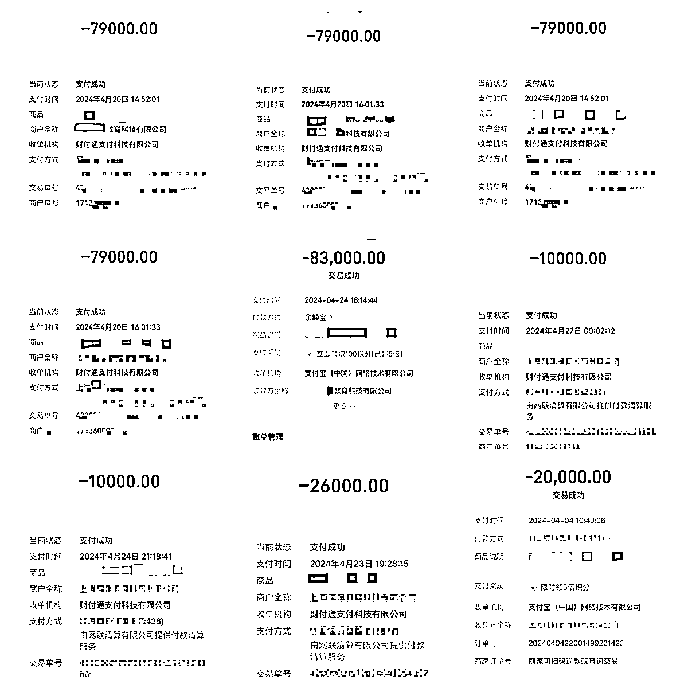
客户付全款和定金的部分截图
小红书搞钱，还是那套熟悉的流程：起号、投流、加微信、成交。怎么做小红书，我在前面的两篇精华帖详细讲了。自媒体的玩法变化很快，这两篇帖子发布了也有半年多了，可能玩法有些过时，但底层逻辑是不变的。小红书的新动向，我会发在后面。
这篇文章，我给大家分享一些新内容，全文8800字，分为6个部分：
1、海外游学赛道介绍
2、如何发现蓝海赛道？
3、如何选择一款好产品？
4、小红书的新动向
5、高客单成交心法
6、新手如何入局海外游学？
海外游学，即不是单纯的旅游也不是纯粹的留学，是游和学的结合，学生在游学期间（一般1-4周）去到国外，学习语言课程、参观当地名校、入住当地学校或寄宿家庭、参观游览国外的主要城市和著名景点。
参加海外游学，一般是为孩子以后出国留学打个前站，或者是让孩子扩展视野，丰富人生经历。
疫情后，海外游学迎来井喷，游学人数和市场规模都在迅速恢复。
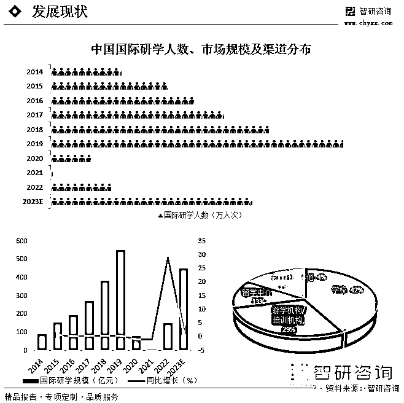
统计数据显示：海外游学的目的地以欧美国家为主。美国、英国最多，德国、加拿大、日本、澳大利亚次之。每个学生一次游学消费平均为3.5万元人民币。
参加游学的家庭都不差钱，家长都希望孩子吃好玩好住好，对品质要求比较高。客户看品质，不去比价，商家的利润就比较高。
海外旅游基本都是一次性客户，但是海外游学的复购很高。有同行的数据显示，订单中老营员占比一般会在60%以上。因为有游学需求的客户，经济实力都是很强的，每年的寒暑假都会出国游学。
比如这个客户，去年暑假给孩子报了我们的新西兰游学，今年1月份就在计划7月的美国游学。
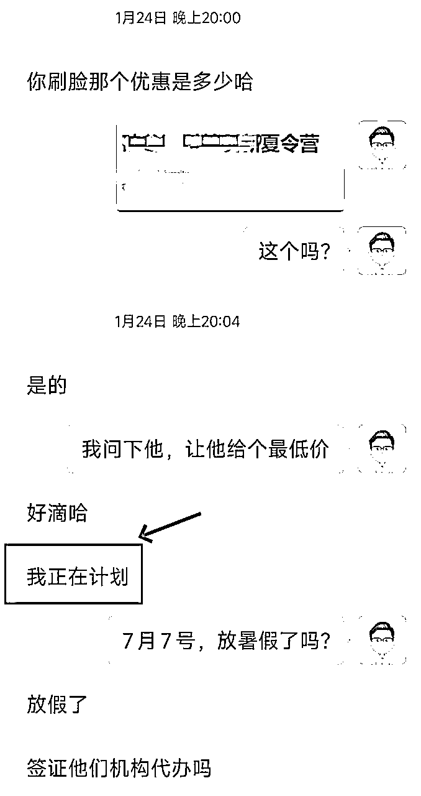
这个赛道目前还是蓝海，比较适合普通人，原因有三：
小红书做旅游，需要旅行社经营许可证，这点难倒了很多圈友。而小红书海外游学投流门槛低，只需要注册个体户就可以了。
由于目前还是蓝海赛道，小红书上的商家极少，聚光投流获客的成本也比较低。
海外游学每天吃什么、住哪里、怎么学、怎么玩等等，都是固定的，学习成本低。我们做好了销售SOP手册，团队的新手1小时就能学完上手。
关于销售SOP，请看第五部分，高客单成交心法。
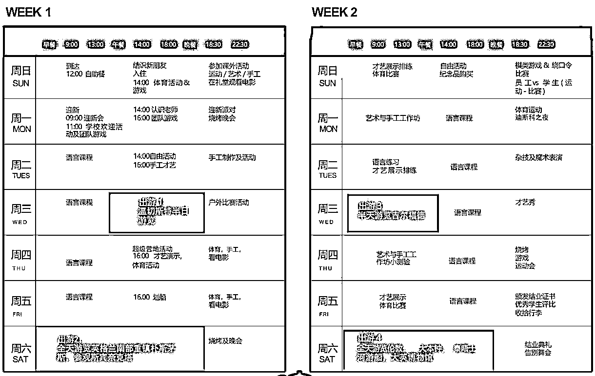
由于家长更看重品质，海外游学产品的利润比海外旅游高很多，不少产品的佣金过万，甚至更多。由于产品利润高，哪怕是只推微信，不管成交，每单也有大几千的提成。
第六部分会展开说，新人如何入局海外游学。
去年7月刚开始做新西兰旅游，我就发现经常有游客说，刚和孩子参加完插班游学，再来报个旅游团。我调研后发现，新西兰游学是个好赛道。但当时新西兰旅游刚启动，各种条件也不具备，就没有做。直到今年初，新西兰春节旅游旺季忙完，我才开始启动海外游学项目，和团队成员一起，同时做美国、英国和新西兰游学。
2个月的实践证明：海外游学果然是个好赛道。
结合海外游学这个案例，我们怎么发现并确定蓝海赛道呢？
我们只有充分了解了找到蓝海赛道的好处，才会有充沛的动力去寻找蓝海赛道，进而通过强大的执行力去赚到大钱。
雷军说过一句话：创业 ，就是要做一头站在风口上的猪，风口站对了，猪也可以飞起来。
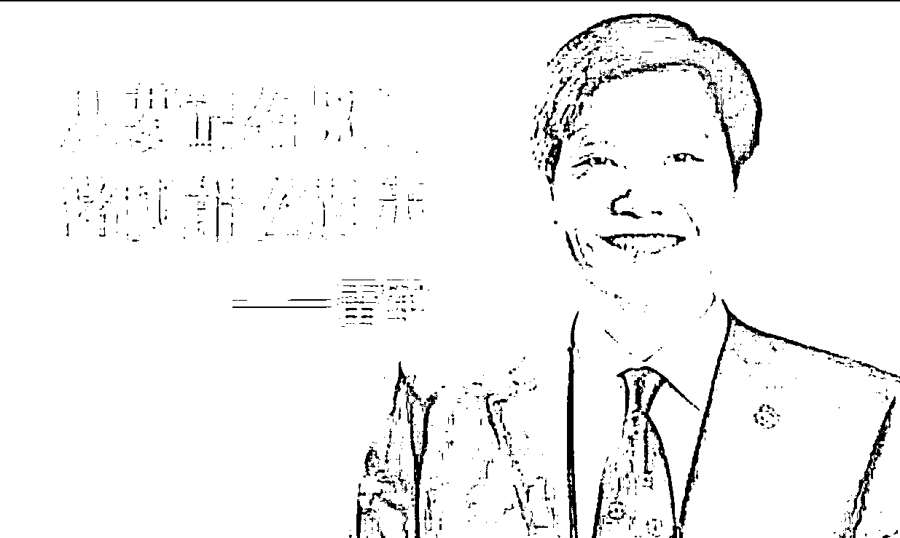
蓝海赛道，商家少，客户多。在供不应求的情况下，哪怕你做的很差，你都能赚到钱。如果你能做好，就能赚大钱。
反过来，红海赛道的商家很多，都是修炼了多年的老狐狸，新手遇到他们，就像是一个赤手空拳的人，面对一群全副武装的对手，创业失败的风险就很大。
每个行业在早期，都是非常暴利的，商家普遍能获得超额利润。随着商家的增多，就开始互相卷，利润不断降低，直到达到行业平均利润。
举个例子，新西兰留学是如何从蓝海变成红海的？
最开始，中介要收学生的中介费的，2万起，这块利润是A。学生入学满一个月后，学校是会把一部分学费返给中介的，这块利润是B。中介的利润就是：A+B。
后来呢，就流行0中介费，中介的利润就变成了：B。
现在更卷了，有的中介不光是0中介费，还会把学校的返佣B拿出一部分，给到学生。我知道有新西兰的中介，能把返佣的一半给到学生。此时，中介的利润就变成了：0.5B
新西兰留学中介的利润变化：A+B → B → 0.5B
这就是竞争对手多了，互相卷的结果。
而我们越早进入蓝海赛道，竞争对手就越少。客户多，商家少，就可以获得比较高的利润。快速拿到了第一桶金，等后面卷起来了，我们也有自己的壁垒。
花爷说过一句话，90%以上的小红书博主，其实都不懂怎么做小红书。
小红书竞争这么激烈的平台，还有这么多小白。蓝海赛道的竞争者很少，懂得怎么做的，更是凤毛麟角，你稍微努力下，就是第一。只要你是行业第一，客户和产品定价权都在你的手上，这时候，赚钱是非常爽的。
寻找蓝海赛道的方法有很多，我以美国游学为例，详细介绍下，我是如何找到海外游学蓝海赛道的。
先看巨量算数：https://trendinsight.oceanengine.com/arithmetic-index
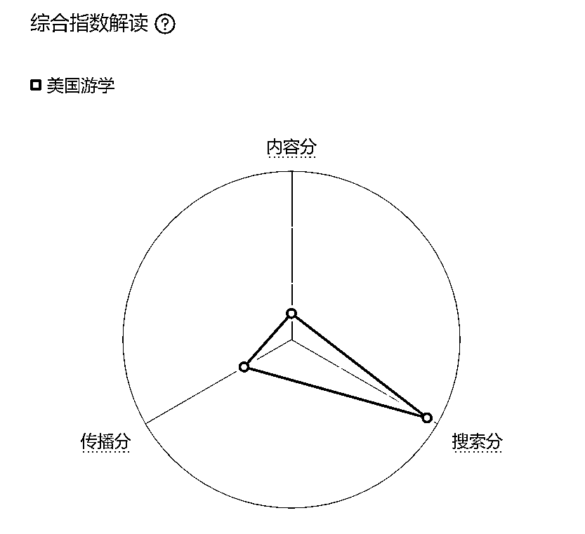
搜索分很高，但内容分很低，说明做的商家少，竞争小。
再看小红书聚光后台：https://ad.xiaohongshu.com/
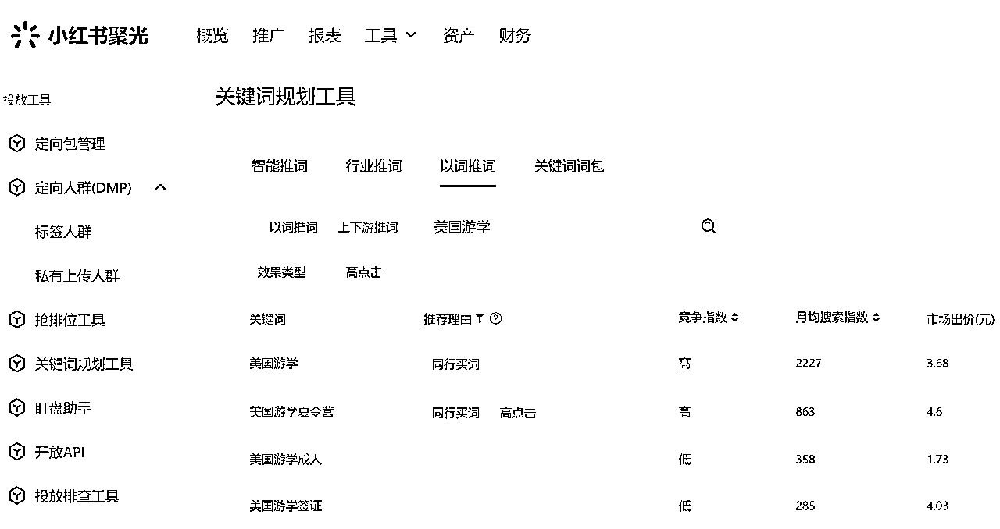
搜索指数是2227，还是非常高的。有同行买词，竞争指数高，说明能做。
在搜索栏输入 美国游学，搜索指数这么高的关键词，笔记才1万篇，妥妥的蓝海啊。
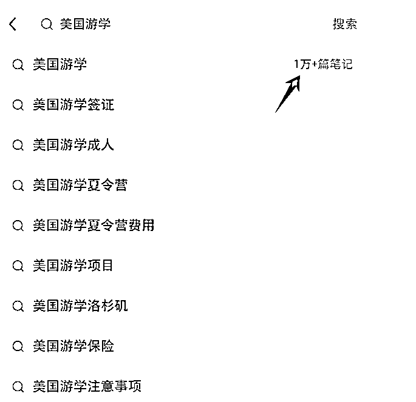
有的圈友可能对1万篇没有概念，你可以搜一下别的赛道，都是大几十万篇。
比如，美国旅游，快100万篇了。
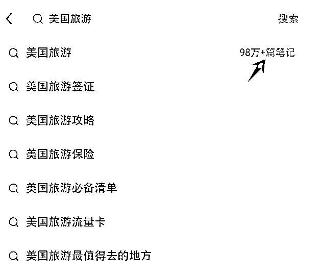
再通过最热的图文笔记，分析下同行。
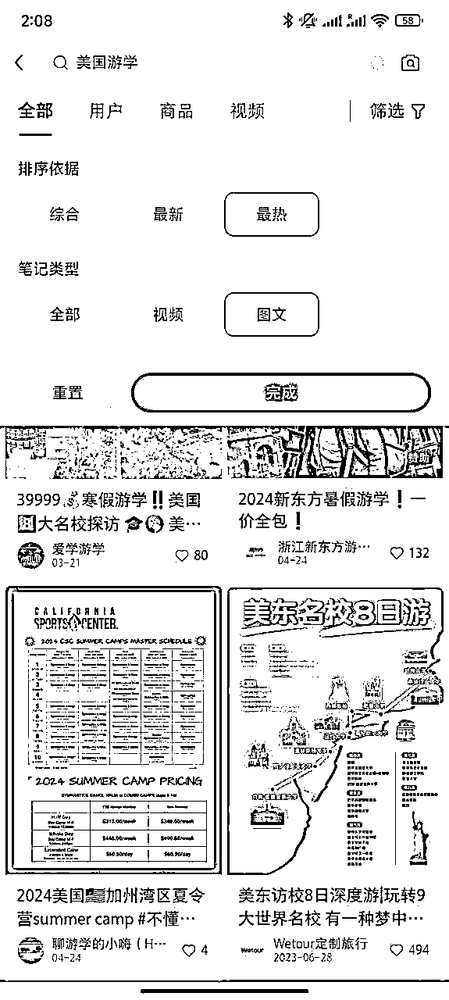
可以看到，对手很少，做得好的，只有EF和新东方两家。
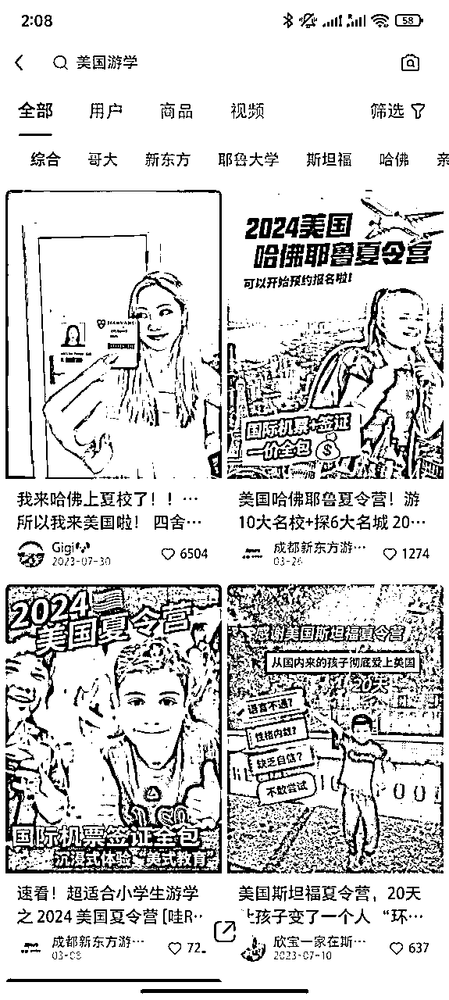
经过以上分析，搜索指数高、笔记少、同行少，妥妥的蓝海啊。
接下来的实践也证明，美国游学确实是个蓝海赛道，我们发的第一篇笔记就爆了，微信加了大几百人。
找到了蓝海赛道，下一步就是选择好的产品。美国游学的产品很多，怎么选出爆款？
电商行业有句名言：“七分靠选品，三分靠运营”。选择一个好的产品，比什么都重要！一个项目能够顺利发展下去，选品绝对是重中之重。选对了，流量和转化so easy, 选错了，开单难于上青天，售后服务更是焦头烂额。
特别是新手卖家，本身的运营经验不足，再来个错误的选品，开单真是地狱级难度。好比打游戏，新手上来就选“最困难”模式，一开局，直接摧垮信心。
举个例子，我做新西兰旅游为什么出单多？
选品好占了很大的原因！
我合作的两家旅行社A和B，分别做跟团游和定制游。做跟团游的A旅行社，是新西兰排名第一的华人旅行社，成立于1998年，产品和服务质量经历了26年的时间考验；做定制游的B旅行社，在台湾的市场份额排名第一，台湾很多综艺节目跟他们合作，口碑非常好。
产品质量过硬，出单很容易，顾客在旅游过程中很满意，老客户转介绍了不少单子。最多的一个老顾客，转介绍了6个单子。哪怕我们5月份开始，涨价了25%，还是选择了我们。
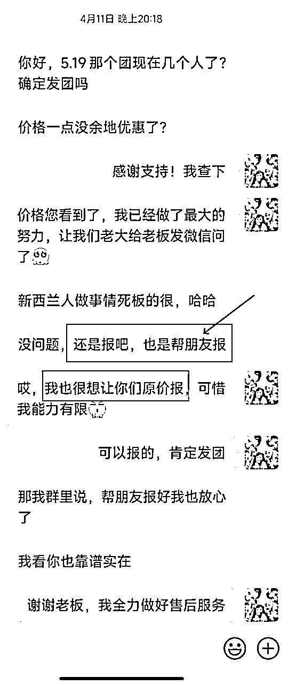
销售就是满足客户的需求。根据马斯洛需求层次理论，从下往上，需求层次逐步提高，客单价也逐步提高，商家对产品的溢价权也会逐步提高。
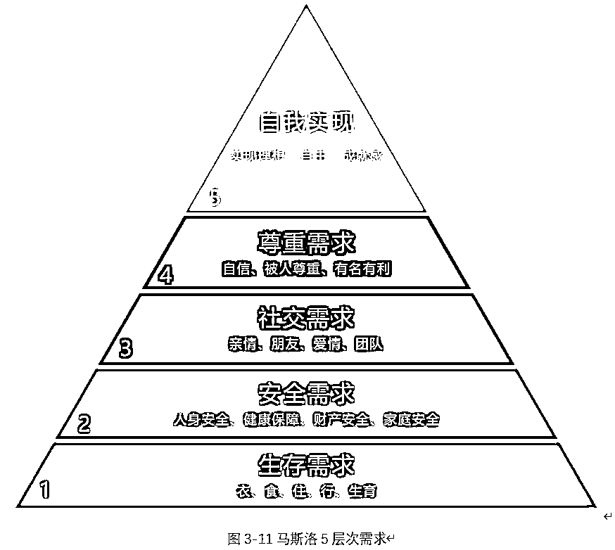
我们要做的，就是尽量选需求层次高的产品，然后把客户在这一层次的需求，做到极致。
以美国游学为例，经过分析，我们发现，家长想让孩子去美国游学，有个很重要的目的，就是打算去读美国名校，先去感受下名校氛围。就类似于国内很火爆的清华北大夏令营。为去美国读名牌大学做准备，就是第五层级，自我实现的需求。
美国读大学，本科四年，400万起步，这种高端客户，看中的就不是产品的性价比了，而是产品的独特性，要实现他的理想、自主和成就感。我们翻看了小红书上全部的美国游学产品，发现都是大路货，没有很牛逼的产品。
基于此，我们和美国的供应商签订了独家的产品供应协议。供应商专门为我们定制了一款美国名校游高端产品，单价7W9。
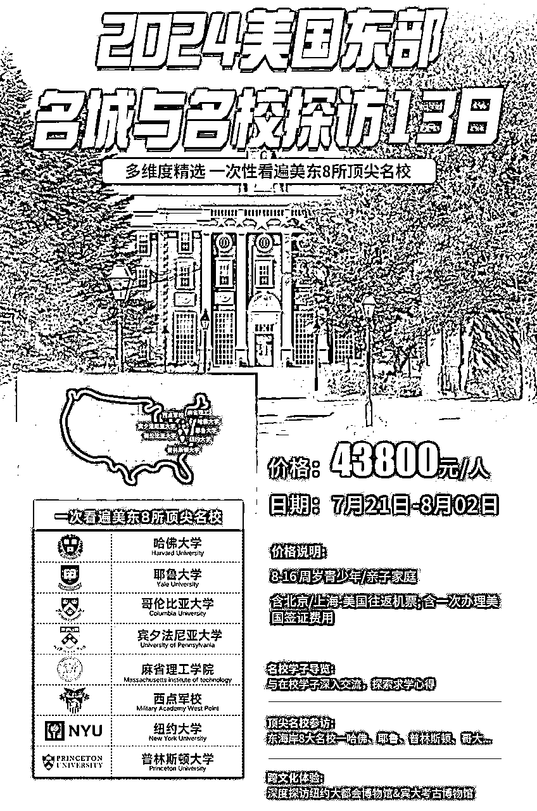
类似于上图的这款产品，但我们是美国本地的供应商，行程更加高大上，我们自己看了都很心动。同时，因为供应商有很多独家资源，国内的同行无法模仿，保证了产品的唯一性。
比如，吃住就在哈佛大学，每个学生分配一个哈佛在读的研究生当助教，学生和助教同吃同住同学习，全真体验哈佛大学的生活、谷歌公司创始人授课、哈佛大学教授指导实习、全程参加NASA的一个科研项目等。
当然，独家销售这么好的产品，也是有代价的。代价就是签了对赌协议，我们最少要报名20个，如果少于20个，会有很苛刻的惩罚措施。好在我们很快就完成了20个的最低要求。
新手在选品方面，有四个地方要注意：
对新手来说，刚进入一个行业，对产品不熟，不懂怎么选款，是很正常的。这时候，千万不要偷懒，多去小红书、抖音、快手、天猫等平台找产品，然后顺藤摸瓜找商家拿到产品后研究分析。
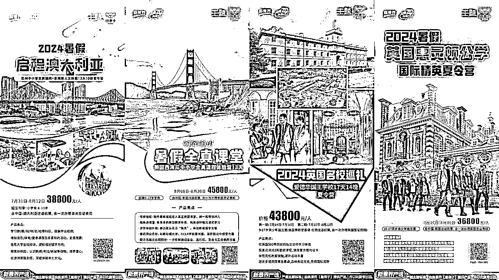
众多的海外游学产品
等你真正的分析了行业的几十个产品后，就能很快入门了。找好产品之后，我们可以在小红书发笔记，测试产品怎么样。测试几次，就能找到适合自己的好产品了。
这个方法比较笨，也比较繁琐，但这才是选品的捷径。
我们选择产品，一定要避免“自嗨”。每个人都活在自己的世界里，自己觉得产品很好，就以为别人也喜欢。要以客户和市场为导向，以相关数据为依据，从各种分析工具得出的数据中，去找可能的爆款。
只有通过数据分析，我们才能看到真实的客户需求。
举个例子，你觉得老外对中国的什么感兴趣？
武术，熊猫，还是中餐？
用谷歌的关键词工具查询中国，排名前30的关键词里面，28个都是关于中国算命的。
这个结果是不是很颠覆你的认知？
产品越细分，用户越精准，做起来就越轻松。
想做精准流量，在选品的时候就要做好细分领域。不要觉得这个群体也想要，那个群体也想要，上一堆产品，这样只会做成杂货铺，增加客服成本和时间成本，到头来还不容易成交。
比如，美国游学有很多产品，我们只关注想去美国读名牌大学的群体，主打这款美国名校游产品。把每一个点都做到极致，最终打爆这款单品。
高客单价产品，怕卖不出去；低价产品，怕挣不到钱；热门产品，怕同行太多；冷门产品，怕客户太少……
事情开始前，很多人总有各种各样的恐惧。很多时候，困难并没有那么大，反倒是自己把自己吓死了。如果前怕狼后怕虎，就去上班，安稳的拿工资。创业，就是要一往无前，勇猛冲锋，狭路相逢勇者胜。都说淘宝难做，还不是那么多商家在一年又一年的赚钱？
我们做选品，你只要考虑如何根据自身的经验和资源，选择一款适合自己的产品。不要有别的杂念，千万不要自己给自己设置障碍。
整个游学过程中，学生在校学习的比例占多少？旅游的比例占多少？一般来说，学习和旅游的比例为1:1 ，是比较合理的安排。
欧洲和美国，3万-4万元人民币应该是最低的价格区间。我不建议选择价格过低的游学产品，拿美国14天游学产品为例，中国至美国的机票大约在8000-10000元人民币之间。现在网络信息发达，可以计算一下美国14天的吃住行费用，太过便宜的产品，服务质量上必定会缩水。
组织机构是否有足够丰富的游学项目经验，以及了解国外的接待细节，如寄宿家庭的安排。出发前寄宿家庭的信息是否给到客户？几个学生一起住？寄宿家庭每天的活动到底是如何安排的？
选品完成，就是小红书运营了。
春节后，我明显感觉到，小红书变得很卷了。具体表现在：
一直做的小红书图文，去年商家少，做的很爽，就是无脑模仿爆款笔记，经常出小眼睛2万+的笔记。而春节后，我发的笔记，经常只有几百个小眼睛。
模仿爆款笔记不太灵了，因为平台上只要出一个爆款笔记，立马大量商家去模仿。经常是我好容易刷到一个旅游的爆款笔记，还没等我来得及模仿，1-2个小时内，就能刷到好几个新西兰旅游商家的模仿笔记了。
比如这个圈圈，被模仿得太多了，最后就是大家都不爆。
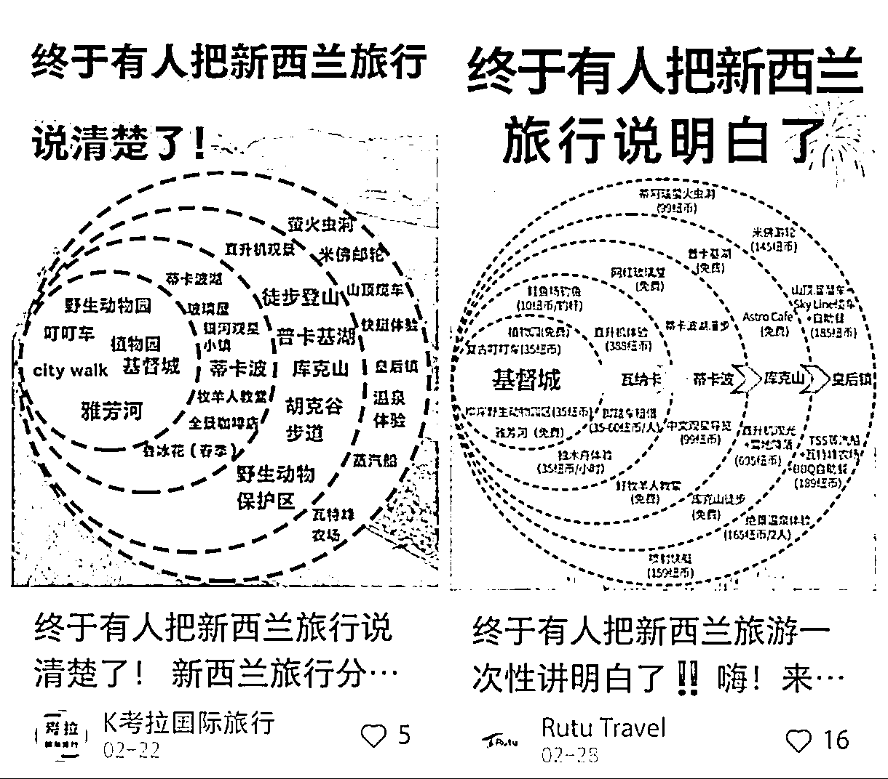
入局商家增加了很多，来投流的人多了，投流成本就水涨船高了。
比如，新西兰旅游加一个微信的成本，从去年的最低8块钱，涨到现在的45块钱，关键是还在不停的涨。
去年商家少，成交率也很爽，每加10个微信，能出1-2单。而春节后，每20个微信可能都成不了1单。
小红书有个推送机制，只要客户点开一篇新西兰旅游的笔记，平台会不停的推送新西兰的旅游笔记，直到推送完。商家增多了，大家都是图文笔记，产品都一样，只能去比价了。旅游市场的花样比较多，我们坚持品质游，就没法比价。
我跟小红书官方对接的工作人员也聊过，这是小红书平台的普遍现象。花无百日红，圈友们找到一个好项目，一定要及时All in！
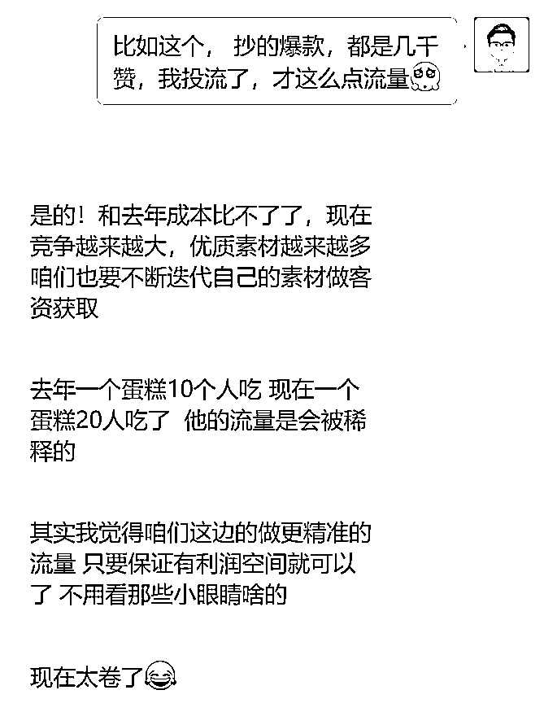
小红书平台变卷了，我们是如何应对，继续持续出单的呢？由于篇幅比较长，就不写在这篇文章了，后面另写文章更新，敬请关注。
小红书加微信只是开始，怎么把大几万、十几万的产品卖出去，才是最考验团队实力的地方。
在高客单成交方面，我们也是积累了一些心得。我做新西兰旅游，私人定制产品的客单价在10万左右，去年7月到现在，累计成交了50多单，客单价最低是7万，最高是27万。我们的几款海外游学产品，客单价最低4万，最高15万。其中，美国游学主要是两款产品，名校游是7W9，另一款客单价是15W。但是成交最多的，是7W9这款产品。
下面，我就以美国名校游这款高成交率（每加13个微信，就能成交1单）的产品为例，讲解高客单成交心法。
销售SOP的整个流程如下：
心态准备—>通过好友—>基本信息了解—>语音沟通—>面试—>逼单—>付款/淘汰—>进入售后环节
卖高价产品，最忌讳的就是在卖产品之前，自己先怂了：这么贵的产品，怎么卖得出去哟？销售人员一定要对产品有信心：我们卖的是稀缺产品，极度供不应求，客户是哭着、抢着、求着我们买。
人的本性是恃强凌弱，想要成交，谈判双方的心理位势很重要。不要因为生怕客户不买，而表现得唯唯诺诺或拘谨，不敢主动提要求。反过来，我们要主动控场、全程把握心理位势、使自己成为这场对话中的主控者。
好比追女孩，高价产品的目标客户是女神。女神不缺跪舔者，你如果因为对方是女神而自降身段，只能沦为下一个跪舔者。展示你的高价值，吸引女神来追逐你，你反过来去筛选女神，往往更容易抱得美人归。
加了客户微信，在基本的沟通之后，就要马上约语音。这也是我们做新西兰旅游的经验。
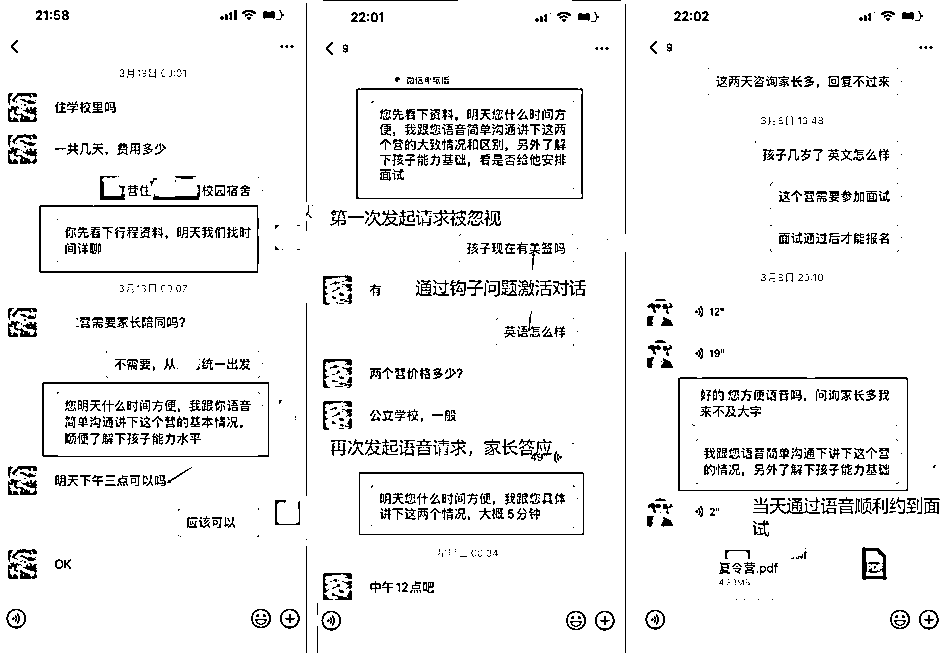
原因有四：
发完资料后，客户就开始进入提问环节：价格、时长、机构/资质、营期、是否全是中国孩子、英语需要达到什么水平等——这个环节也是客户最主动的时候，过了这个村就再也没有这个店了，一定要抓住这个环节。
客户主动是因为他想要了解详情、以确定这个产品是否能解决其需求，也就是有求于你，需要你的帮忙，抓住这个环节你就可以进入主导角色，否则会一直被动。可以说这个环节是整个客户沟通生命周期中最重要的环节，决定了接下来事态走向。
很多问题和情况说明（卖点等），不是一句话、几个字就能回答清楚的，你为了“答疑解惑”，务必就会长篇大论微信打很多字，占据整个手机屏幕，显得你非常主动，心理博弈位势就下去了，不利于接下来的谈判。
微信打字，就意味着你们的沟通是单向的，他随时可终止。你发完信息，客户一直不回复，也许他忙别的事情去了。你还费劲巴拉的猜：这聊得好好，为啥突然不回复了？
这样就无法互动影响。不能互动影响，那么高客单、非刚需的购买决策你就很难推动。
而语音是实时的，客户没法做别的事，必须专注跟你语音，你能及时掌握客户的反应，从而去互动影响他。
微信打字，都是冷冰冰的。发语音条的话，客户会很厌烦，说不定有的语音条都懒得打开（我是语音条一多，转文字都懒得转，直接不听）。通过语音互动，能感受到活生生的人，从而建立基本信任。
我们在语音沟通后，会要求客户填表约一场面试，面试通过后，才卖给客户。对的，你没有看错，是面试通过后，才卖给客户。客户想买，我还不一定卖！
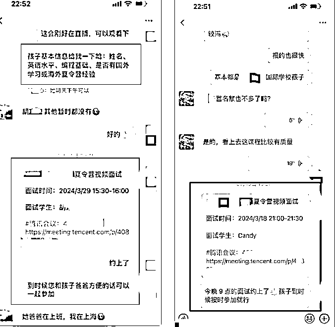
我们安排这场面试，有3个目的：
表都不填，面试都约不到，表明客户的意向不强。这么高的客单价，意向不强，就很难成交。我们就可以放弃这个客户，不用在他的身上再浪费时间精力了。
我们是稀缺产品，是有标准的，只卖给符合我们标准的客户。只有通过了面试，才能参加我们的游学。
来之不易的，才会珍惜。我们做过测试，有了面试环节，成交率大幅提升。
这方面，最好的榜样就是劳斯劳斯。
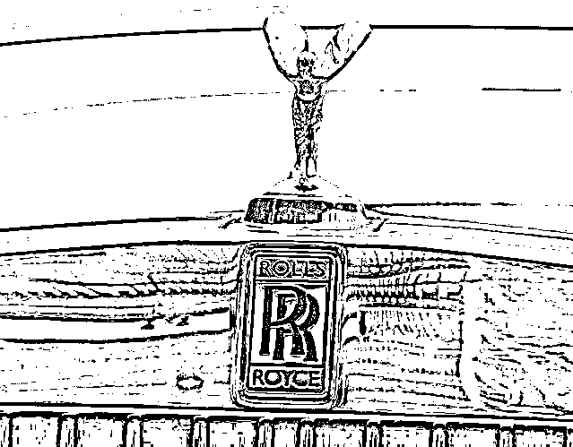
想买劳斯莱斯汽车，先要审查身份及背景条件。曾经有过这样的规定：只有贵族身份才能成为其车主。
到现在，也不是有钱就能买到的。第一档“银灵”系列：要求是国家的顶尖群体——如：各国的首脑、政要以及皇室成员。 第二档“银羽”系列：要求是国家的中流砥柱或社会精英——如有影响力的企业/集团或社会知名人士。 第三档“银影”系列：要求的是要有钱，而且没有犯罪记录和黑社会背景。
正是因为有了门槛，才让劳斯莱斯汽车成为地位和身份的象征。
面试的本质也是一次促销，在打开摄像头、看得见彼此的情况下，家长信任度提升，仪式感也上去了，成单概率大大提升。
面试结束后，需要在30分钟内给家长发送面试反馈，因为面试刚结束时是家长体验感最强、满意度峰点时间段，一定要趁热打铁，一旦跟进不及时，到了第二天他的体验已经淡化忘记，再追单成功率就会大大降低（惨痛经验）。
在给出面试反馈后（一般为通过），告知家长孩子面试已通过，可以直接报名，然后马上跟进询问家长想报名哪个营期——实际目的是为了正式确认家长意向，是一个验证动作。
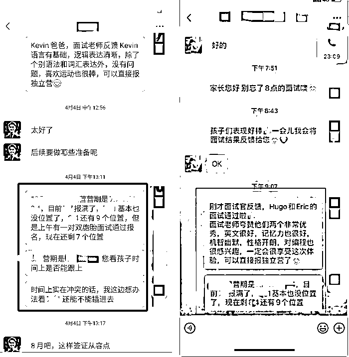
高意向的家长会直接回复XX营期，意向不强的家长会回复再考虑一下，跟进根据情况对应推进进程：
1、确认营期/报名的家长，引导进入付款流程
2、需要再考虑的家长，第二天再接着跟进逼单（但根据经验，大部分会沉下去，因为他在体验感最强的峰点时反响也一般般，后续大概率很难报名）
所有客户在付款前都会质疑为难一番，很少有极度爽快、不多问直接打款的，好一点的问几个关键棘手的问题就OK了，多疑的会来回确认肯定。
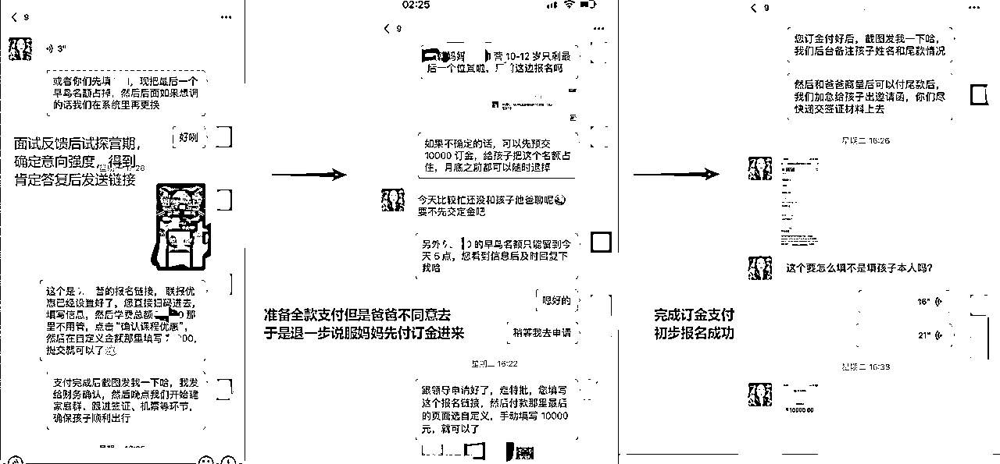
这是人之常情，尤其是线上销售，不质疑（多询问确认）一番，他很难放心，我有时候买个几百块的东西，明明心里已经准备买了，但还是要抓着客服质问半天，“这个能不能保证…坏了怎么处理…”，当我对一个物品一直揪着细节的时候我就知道自己其实已经准备买了，希望通过他的嘴说出我期待的话，让我自己买得更安心。
所以换个角度看待客户的“变脸”行为，这说明他有在认真思考是否要从自己兜里掏出这笔钱来进行这场交易，不一定是坏事。
但是这个时候他的需求、问题反应一定要迅速，是他在做决策时的关键时刻，需要给他加把油，最终促成成交。
如果他比较纠结，可以给出退一步的方案，跟他说现在位置紧张，可以先付10000订金保留一个位置，在X月X日之前都可无理由退款，降低心理压力，让他先报进来，后续再通过各种由头敦促完成尾款。
对于不付款的客户，做好标签备注、系统分类，下个游学季再见。
把控销售节奏，从客户加微信开始：
通过好友—>基本信息了解—>语音沟通—>面试—>逼单—>付款/淘汰—>进入售后环节，单客户全流程周期应该控制在2-4天内（除去面试预约等待时间）
4天后客户状态：要么完成付款等待售后/正在付款，要么不合适淘汰等待下个游学季重新激活。
经过多次经验摸索验证，如果节奏拖沓，或者没有及时跟进，客户就很容易沉下去，超过4天后就很难再捡起来，造成流失或意向始终未明，因此节奏是这款产品成交最为关键的要素。
同时，整个过程要营造一种紧迫感（营期快报满了、面试没位置、临时预留名额只有24/48小时有效），把客户代入节奏。
限于篇幅，我们的海外游学产品高客单成交SOP就不继续写了，有兴趣的圈友可以找我交流。
做小红书，说起来简单，做起来难。前面说过，现在小红书平台越来越卷了，打法变化太快了，2个月前有效的方法，可能现在就行不通了。
我们一直专注小红书平台，也不停的在更新写爆款笔记的打法，你必须掌握最新的打法，才能持续获得流量。
小红书旅游，是需要旅游企业，门槛很高，但海外游学的认证门槛就低很多了。只需要花几十块钱注册个体户，经营范围里面带：自费出国留学中介服务。
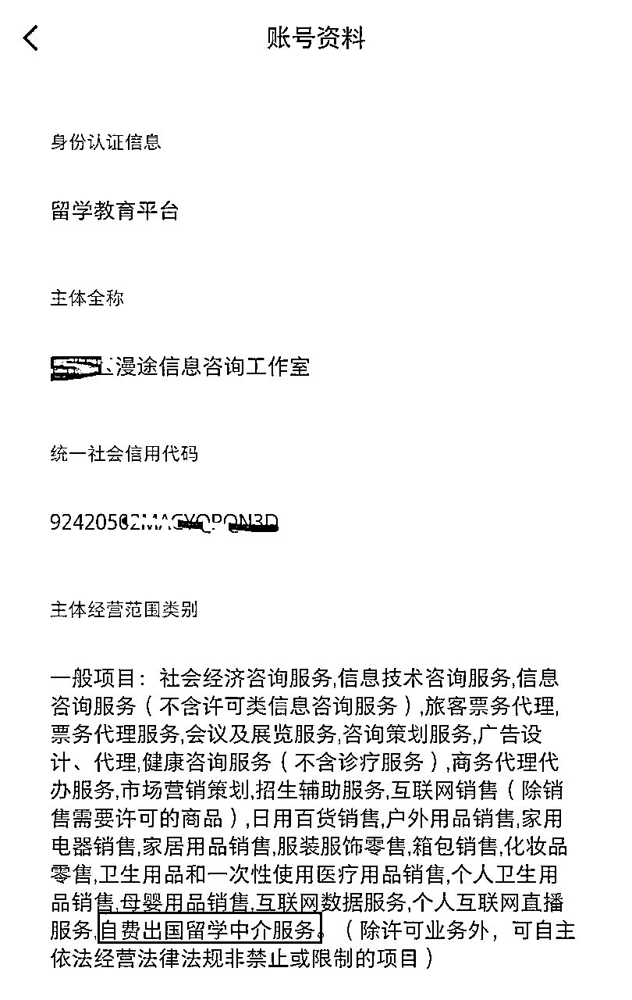
认证企业号后，就开始投流。聚光投流现在的门槛是每个月最低消费1000元，可以要微信。相对于游学产品动辄过万的利润，这个投入可以忽略不计了。
可以说，供应商决定了游学项目的成败。
原因有三：
现在做海外游学的商家很多，绝大多数产品都没什么特色。在客户选择多样化的今天，如果没有自己的产品特色，很难卖出去。
这一点，选择海外游学目的地国家的供应商，会有很大的优势。我们的美国、英国和新西兰游学产品，都来自当地的大供应商，我们全程参与到产品的设计中。这样做，不光保证了我们的产品是独家的，而且同行也很难复制。
参加海外游学的都是孩子，现在的孩子，家长们都宝贝得不得了。如果因为供应商经验不足，导致孩子安全出问题，从生病到发生意外，销售方是要负一定责任的。
供应商的交付非常关键，引用坤哥的话：“游学这个产品难以交付，不可控因素太多，收到手的钱不一定是你的，完美交付后才能落袋为安。”
一手供应商，给的佣金也很好。我们看了一些国内供应商的产品，由于多了一道环节，佣金少很多。
当然，对于新手来说，跑通这个项目最重要。国内各旅行社，都有海外游学产品，只要是靠谱的旅行社，哪怕佣金低一点，产品没那么有特色，先做起来。
完成比完美重要100倍！
前面说过，海外游学的复购率很高。我们一定要做好老客户的维护，让他每年寒暑假都找你，一个客户每年赚几万，简直不要太爽。
客户裂变也要做好，他家孩子的同学，几乎都是你的目标客户。只要介绍给你，有老客户的信任背书，会很容易成交的。
以上就是我今天的分享，希望能给大家提供一些帮助，也欢迎对海外游学感兴趣的圈友一起交流，大家一起生财有术！